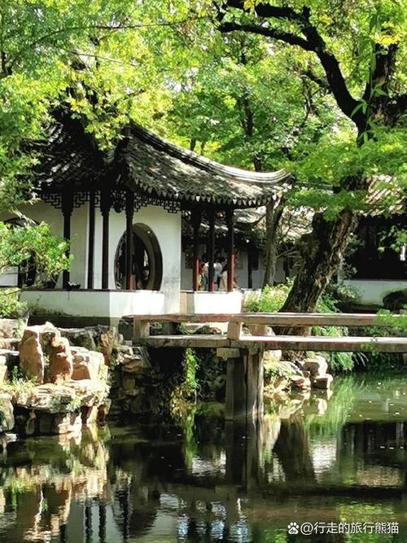

Humble Administrator's Garden
The Humble Administrator's Garden, or Zhuozheng Yuan, stands as the crown jewel of Suzhou's classical gardens. Created in 1509 during the Ming Dynasty by Wang Xianchen, a retired government official, its name reflects the owner's humble intention to tend a garden rather than pursue political ambition.
Covering 52,000 square meters, it is the largest garden in Suzhou. The design centers on a large central pond, surrounded by pavilions, corridors, and bridges. The garden is divided into three sections: the eastern section features open lawns and pine forests, the central section contains the main buildings and water features, while the western section offers a more intimate, natural setting.
Every window frames a different view, every corridor leads to a new discovery. The garden embodies the Chinese philosophy that the finite can contain the infinite, and that nature and architecture should exist in perfect harmony.